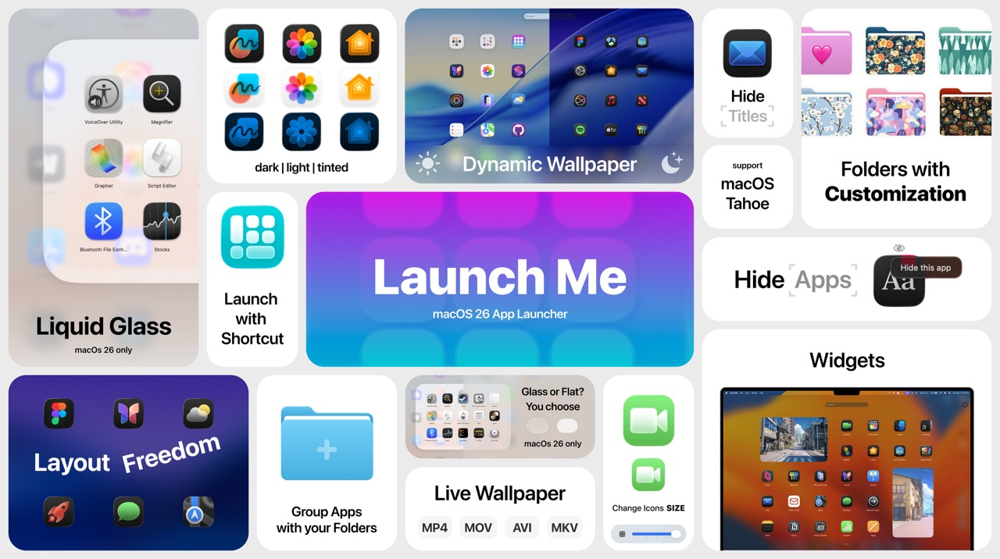
How to Get Launchpad Back on macOS 26 Tahoe
Why Did Apple Remove Launchpad in macOS Tahoe?
After upgrading to macOS Tahoe, you might have noticed something missing — Launchpad is gone. With all your perfectly managed folders.
Apple replaced it with Apps, which now handles app launching. So if you want to open a Mac app, you'll have to search for it in Apps or dig it up manually in Finder.
For users who've relied on Launchpad for years, this change can be confusing or annoying, and some might even hesitate to upgrade.
But don't worry. This guide explains how to get back Launchpad experience on macOS Tahoe and even make it much better than it was before.
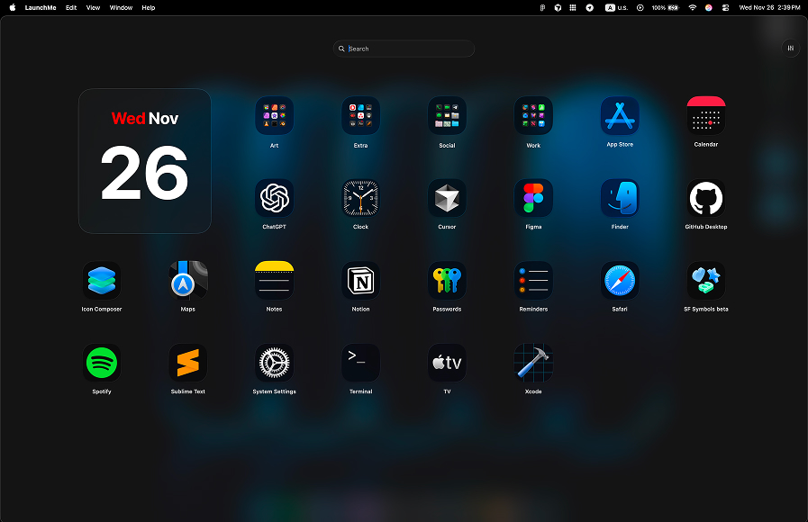
How to Get Launchpad Back on macOS 26 Tahoe
If you want to get Launchpad back on macOS Tahoe, the best option is to use a LaunchMe.
One of the best examples available on the AppStore is LaunchMe. It provides a clean modern interface that feels just like the original macOS Launchpad but with macOS 26 Tahoe design with Liquid Glass or Classic theme. It's fast, smooth, and have unlimited ways to customize it.
When it comes to customization, you can use a lot of features LaunchMe provides you such as Dynamic and Live Wallpaper, many Widgets, custom app icons or Clear Colored icons that even Apple doesn't have in their OS.
Features of LaunchMe
- Clipboard history
- Calculator
- Hot Corners
- Search Files
- Widgets - Photo, Shapes, GIF, Text, Animations, Calendar
- Page with Categories
- Custom layout
- Switch between Liquid Glass or Classic themes
- Dynamic wallpapers (HEIC) supported system Light / Dark mode
- Video wallpapers (MP4, MOV, AVI, MKV)
- Add any folders from your computer for fast navigation to your Files Folders
- Customize Files Folders with colors, icons, images
- Hide app titiles
- Change icons size
- Set custom key shortcut
- Hide apps you don't need
- Save different app layouts
LaunchMe is free to use with standard Launchpad features.
If you miss Launchpad and want that familiar experience back, LaunchMe is an excellent solution.
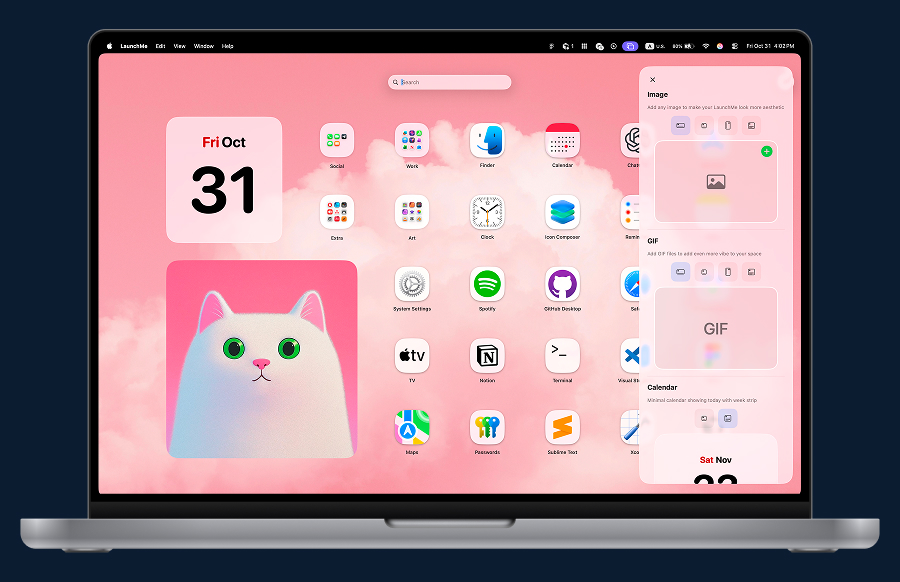
Users can choose how to use their Mac
Apple may have removed Launchpad from macOS Tahoe, but that doesn't mean you have to live без него. A Launchpad alternative LaunchMe lets you get Launchpad back on macOS Tahoe and enjoy the same familiar experience.
You can learn how to customize LaunchMe in the Help Center.
Get LaunchMe
and launch apps like a pro
Download for macOS
More screenshots from LaunchMe
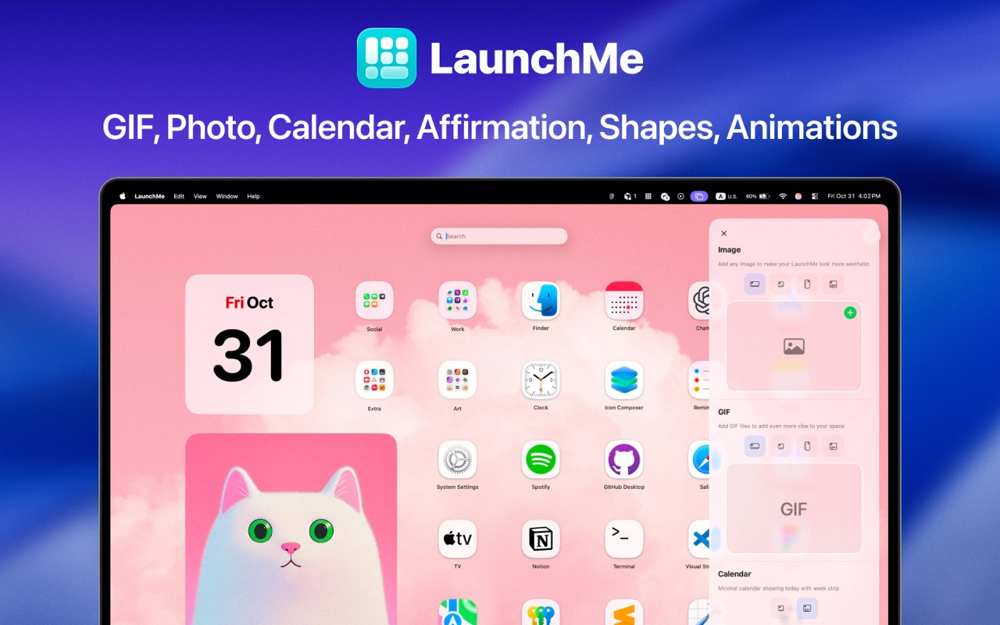
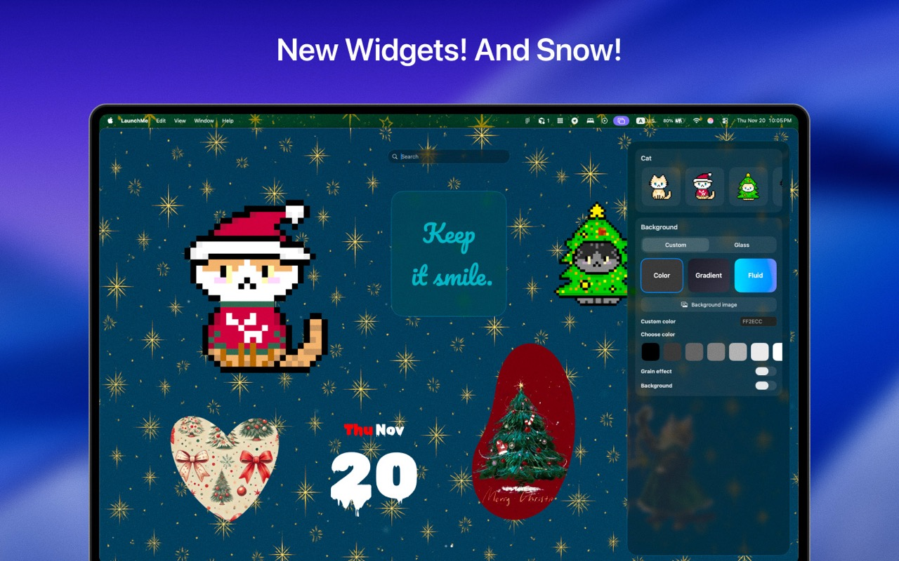
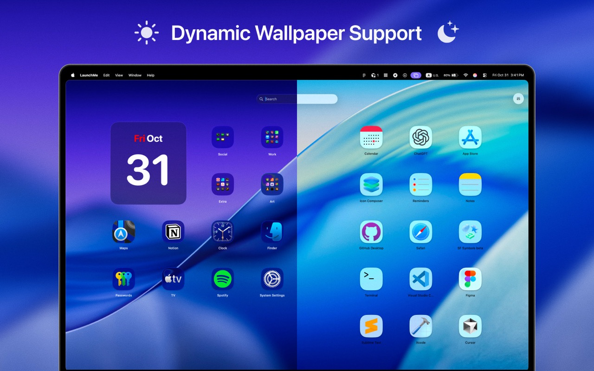
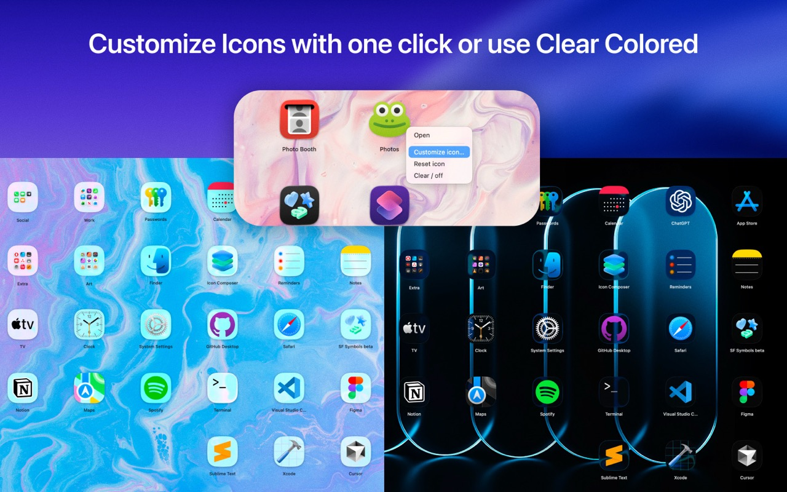
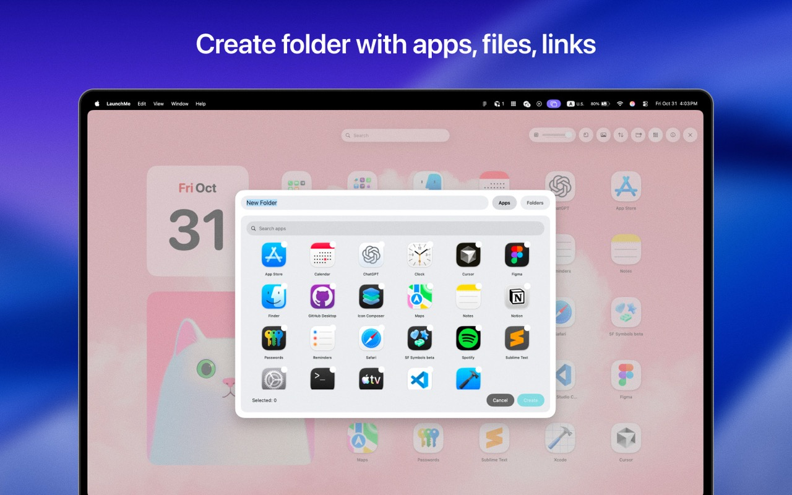
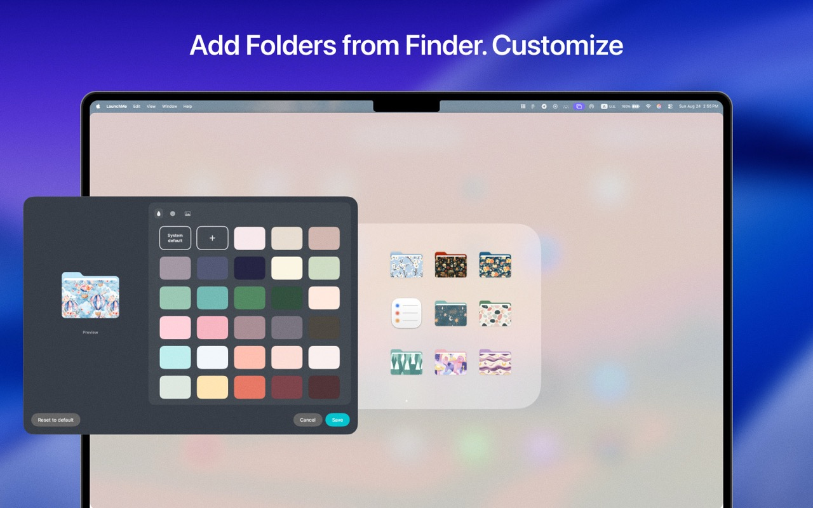
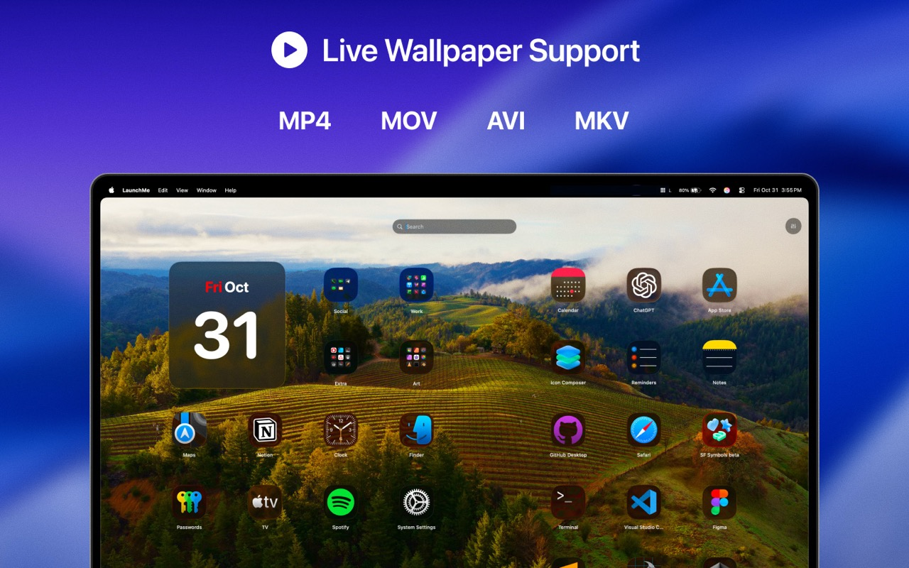
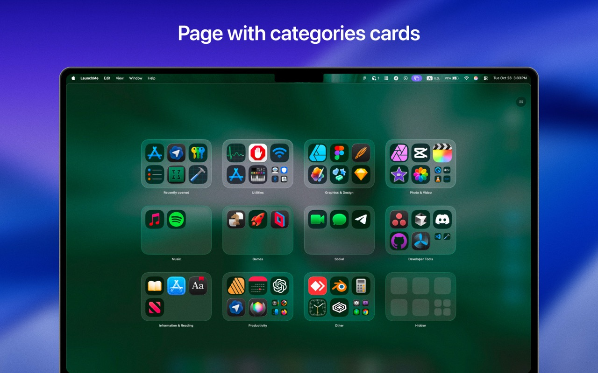
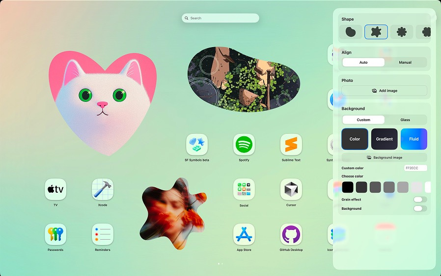
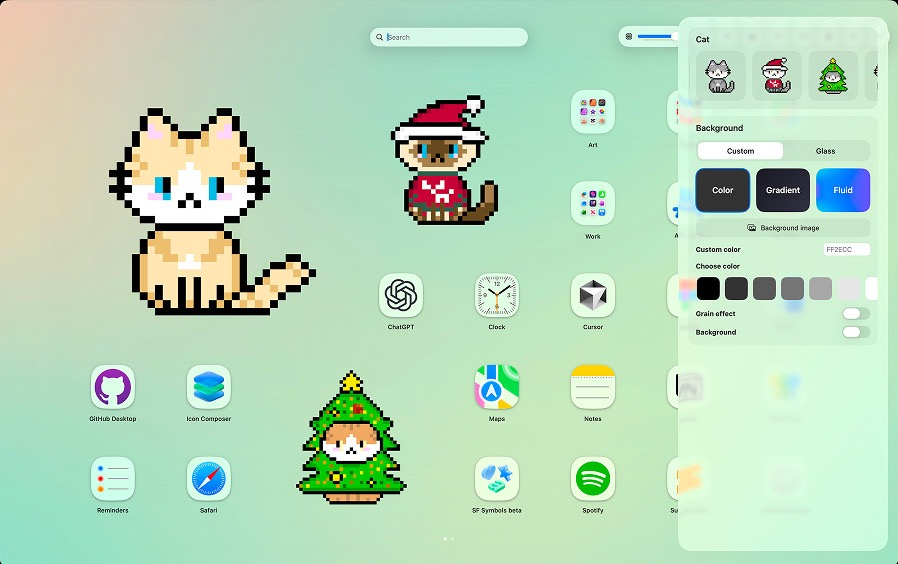
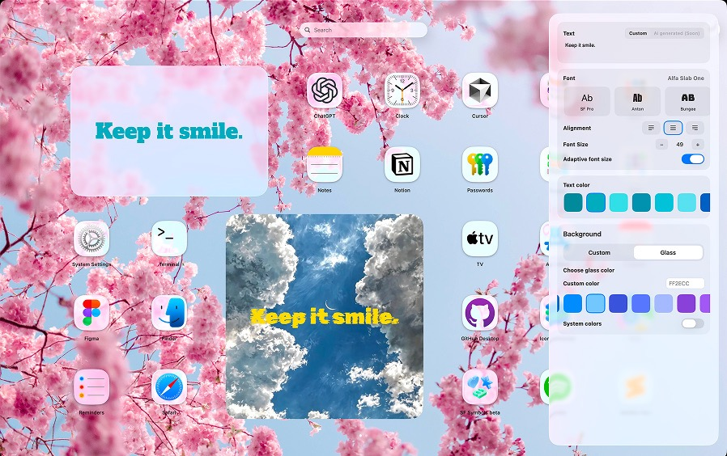